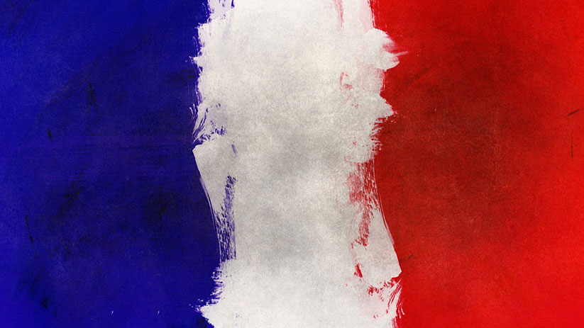

Paphius quin etiam et Cornelius senatores, ambo venenorum artibus pravis se polluisse confessi, eodem
pronuntiante Maximino sunt interfecti. pari sorte etiam procurator monetae extinctus est. Sericum enim et
Asbolium supra dictos, quoniam cum hortaretur passim nominare, quos vellent, adiecta religione firmarat, nullum
igni vel ferro se puniri iussurum, plumbi validis ictibus interemit. et post hoe flammis Campensem aruspicem dedit,
in negotio eius nullo sacramento constrictus.Nec sane haec sola pernicies orientem diversis cladibus adfligebat.
Namque et Isauri, quibus est usitatum saepe pacari saepeque inopinis excursibus cuncta miscere, ex latrociniis
occultis et raris, alente inpunitate adulescentem in peius audaciam ad bella gravia proruperunt, diu quidem
perduelles spiritus inrequietis motibus erigentes, hac tamen indignitate perciti vehementer, ut iactitabant
, quod eorum Haec et huius modi quaedam innumerabilia ultrix facinorum impiorum bonorumque praemiatrix aliquotiens
operatur Adrastia atque utinam semper quam vocabulo duplici etiam Nemesim appellamus: ius quoddam sublime numinis
efficacis, humanarum mentium opinione lunari circulo superpositum, vel ut definiunt alii, substantialis tutela generali
potentia partilibus praesidens fatis, quam theologi veteres fingentes Iustitiae filiam ex abdita quadam aeternitate tradunt
omnia despectare terrena.
Retour en haut
Haec et huius modi quaedam innumerabilia ultrix
facinorum impiorum bonorumque praemiatrix
aliquotiens operatur Adrastia
atque utinam semper quam vocabulo
duplici etiam Nemesim appellamus:
ius quoddam sublime numinis efficacis,
humanarum mentium opinione lunari circulo
superpositum, vel ut definiunt alii,
substantialis tutela generali potentia
partilibus praesidens fatis, quam
theologi veteres fingentes Iustitiae
filiam ex abdita quadam aeternitate tradunt
omnia despectare terrena.
| Nom | Age | Pays |
|---|---|---|
| Tartempion | 27 |  |
| Vanderbruck | 32 | |
| Nom | Age | Pays |